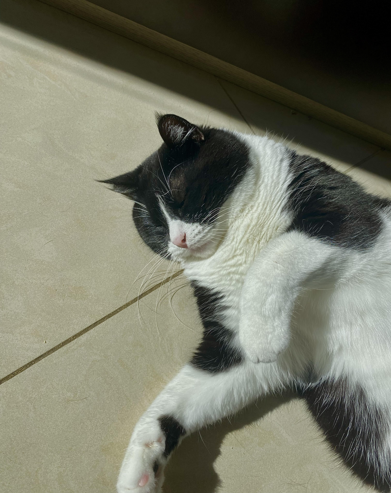
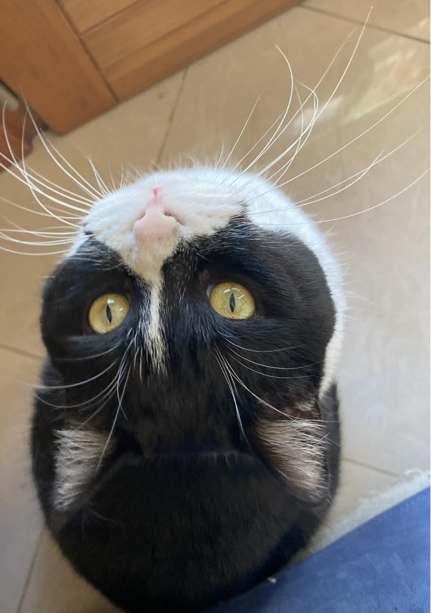

LA MIA SCHEDA
- Giulia Materrelli
- Ho 16 anni
- Freqento l'isituto Maxwell
- Sono nella classe 3AINFO
- Sono nata il 1 dicembre 2007
- Ho residenza a Nichelino
Sono cresciuta a Nichelino, provincia di Torino. Sono una persona molto timida ma che quando iniza a conoscere le persone riesce a mettere da parte la timidezza; inoltre sono una persona ordinata e che odia la confusione, infatti nei lavori di gruppo tendo spesso a essere quel tipo di persona che organizza tutto nei minimi dettagli.
Le mie passioni sono la ginnastica ritmica, fare shopping e guardare film. Nel tempo libero principalmente pratico ginnastica ritmica, che ormai pratico da 12 anni e l restante tempo lo uso per rilassarmi.
In questi ultimi anni ho sviluppato la capacità di essere autonoma, grazie allo sport che mi ha insegnato a lavorare in autonomia. Sono anche riuscita ad aprirmi di più con le persone crescendo e creandomi un gruppo di amici con cui conversare. Pertanto sono anche riuscita a diventare una persona diligente grazie allo sport e anche grzie al liceo che ho frequentato fino all'anno scorso.
Dopo il diploma non ho ancora le idee chiare ma credo che frequenterò l'università triennale in ambito medico, oppure andrò a lavorare nell'ambito informatico.
Una frase ce mi rappresenta è: Se qualcosa non ti piace, cambiala, se non puoi cambiarla, cambia il tuo atteggiamento, non lamentarti. Ho scelto questa frase perchè sono una persona che si adatta molto al carattere delle persone o alle situazioni, cambiando il mio atteggiamento molto spesso.

